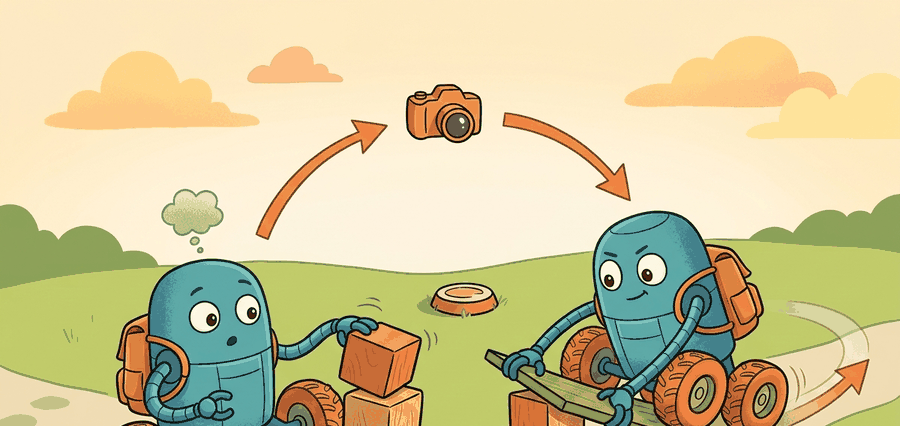

"Mobility is morphology plus a contract with the ground."

Figure 45.1A: Different mobile bodies buy different feasible contact patterns, sensing needs, and recovery margins.
A Builder's Locomotion Notebook
Big Picture
Mobility morphology is a systems decision. Wheels, legs, tracks, and hybrids are not aesthetic choices. They change the state estimator, the controller, the contact model, the energy budget, and the set of recoverable failures.
This section turns robot morphology into an explicit optimization problem. For a mission class $m$, terrain distribution $\mathcal{T}$, and morphology candidate $r$, a useful design score is $J(r) = w_t T(r, \mathcal{T}) + w_e E(r, \mathcal{T}) + w_s S(r, \mathcal{T}) + w_r R(r, \mathcal{T})$, where the terms represent traversal time, energy, slip or fall risk, and recovery burden. The right body is the one that minimizes the mission score, not the one with the most dramatic demo.
Wheels obey nonholonomic constraints, such as $\dot y \cos \theta - \dot x \sin \theta = 0$, which make them efficient on prepared surfaces but weak on discontinuous footholds. Legged bodies trade efficiency for contact flexibility. Hybrids buy mode switching, but they also add controller complexity, extra failure modes, and more sim-to-real surface area.
Morphology Sets The Failure Taxonomy
If a robot cannot place a stable contact where the terrain demands one, no policy can rescue the mission. Morphology is the first controller.
Figure 45.1.1 turns morphology choice into an inspectable loop: environment evidence, feasibility model, body selection, and mission-level verification.
Theory
A practical mobility stack separates three models. The geometric model asks whether the body can physically fit and place support contacts. The dynamic model asks whether required forces and torques are feasible. The autonomy model asks whether perception, estimation, and control can keep the body inside that feasible set when the world deviates from the nominal plan.
For wheeled robots, the central quantity is curvature and traction margin. For legged robots, it is the reachable contact set and recoverable center-of-mass motion. For hybrids, it is the switching policy between support modes and the price of switching too late.
A graduate-level design habit is to compare morphologies on one scenario panel: ramps, stairs, gaps, debris, low-friction patches, narrow aisles, and payload variations. A single average speed number hides the actual body-environment contract.
Algorithm: Morphology Selection For A Deployment Panel
Define the mission panel: terrain classes, obstacle statistics, aisle widths, payloads, runtime, and allowed intervention rate.
Compute geometric feasibility for each morphology: clearance, reachability, and required support contacts.
Estimate dynamic feasibility: traction margin for wheels, contact reach and impulse budget for legs, and mode-switch overhead for hybrids.
Score energy, traversal time, maintenance burden, and expected recovery cost on the same panel.
Choose the morphology whose failure cases are observable and recoverable with the available sensing and control stack.
Worked Example
The first useful artifact is not a render. It is a morphology scorecard built on the exact terrain panel that the deployment team expects to face.
Expected output interpretation. The hybrid body wins because the scenario panel prices recovery burden and slip heavily. A pure wheeled platform is faster and cheaper in energy, but it pays too much in recoveries on discontinuous terrain.
Code Fragment 45.1.1: A morphology ledger compares wheel, leg, and hybrid bodies on one matched mission panel. The score is not universal. It is only valid for the exact terrain and weighting assumptions recorded in the artifact.
Library Shortcut
Use Isaac Lab or MuJoCo for terrain replay, Drake or Pinocchio for kinematic and dynamic checks, and ROS 2 logs for deployment traces. These tools make morphology arguments reproducible instead of anecdotal.
Practical Recipe
Measure the real terrain distribution before picking a body.
Record which tasks require continuous rolling, stepping, kneeling, bracing, or contact-rich manipulation while moving.
Compute mission cost with the same metric code for every morphology candidate.
Stress the winner with the most probable field perturbations: wheel slip, missing foothold, load shift, and degraded localization.
Save one decision card with geometry, dynamics, telemetry assumptions, and failure thresholds.
Common Failure Mode
Teams often inherit a platform and then pretend the remaining work is only learning. If the body is mismatched to the terrain, the learning stack becomes a patch for the wrong problem.
Practical Example
A hospital delivery robot can dominate with wheels because the floor is prepared and runtime matters. A substation inspection robot on gravel, curbs, and stairs may need legs or a wheel-leg hybrid because contact flexibility is worth the extra energy.
Memory Hook
Morphology is the slowest hyperparameter to change, so it deserves the earliest evidence.
Research Frontier
Current frontier work pushes wheel-leg hybrids, underactuated dynamic legs, and morphologically adaptive bodies. The open question is not only which body is fastest, but which body yields the most recoverable autonomy under realistic sensing and maintenance budgets.
Self Check
Can you state one terrain condition that immediately rules out wheels, one that makes legs wasteful, and one where a hybrid pays for its added complexity?
A useful way to teach this material is to force every body choice to expose its hidden middleware and estimator implications. Wheels favor odometry and traction models. Legs require contact estimation, gait timing, and state estimation through intermittent support. Hybrids require a mode estimator that can explain why the robot changed support strategy.
This is also the right place to connect morphology to downstream chapters. The same body choice that helps locomotion may hurt manipulation reach, teleoperation ergonomics, or whole-body safety. That coupling is why embodied systems resist clean organizational boundaries.
Practical Tool Choices For Morphology Studies
Tool or Library
Role in the Topic
Builder Advice
Isaac Lab terrain generators
Generate matched terrain panels for wheel, leg, and hybrid replay
Keep terrain seeds fixed when comparing morphologies.
Drake or Pinocchio
Check kinematics, support reach, and dynamic feasibility
Use symbolic or batch checks before expensive learning runs.
ROS 2 logging
Capture real failure cases and operator interventions
Replay real failures in simulation rather than inventing toy disturbances.
Build a five-scenario mobility panel with flat floor, ramp, curb, gap, and low-friction patch. Compare one wheeled, one legged, and one hybrid controller or simulator profile under the same metric script.
When a morphology argument fails, isolate whether the error came from environment assumptions, force or torque feasibility, localization fragility, or operator intervention burden. Different bodies fail for different reasons, and the mitigation route changes with the reason.
Primary source for modern GPU robot-learning workflows and terrain-heavy mobility experiments.
Key Takeaway
Choose mobility bodies with matched terrain evidence, not with a favorite demo clip.
Exercise 45.1.1
Write a morphology scorecard for one real deployment setting. Include the terrain distribution, the weighted mission objective, one irrecoverable failure for each body type, and one reason the winning body might still lose after six months of field data.